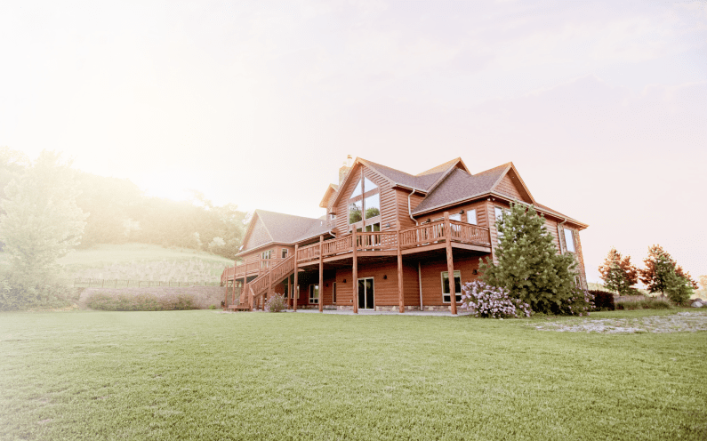
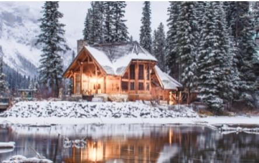
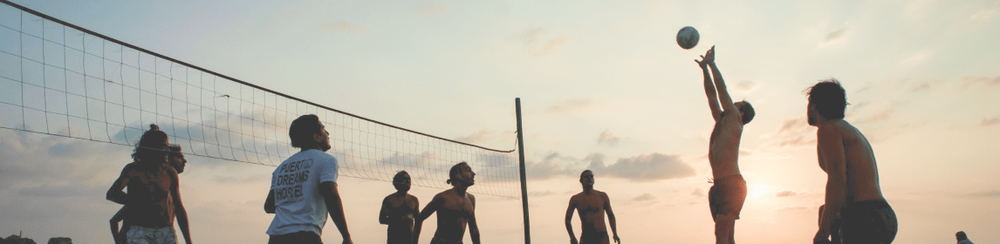

Санкт-Петербург
Отдохните от суеты мегаполиса в уютном тёплом доме в окружении экологически чистых лесов, рек и озёр
Арендовать дом01
Место
Отдохните в уютных деревянных домах с камином, сауной и джакузи, расположенных на берегу озера. Для любителей полного уединения есть домики и в глубине парка, в окружении вековых деревьев.
За счёт особой конструкции в наших домах очень тепло зимой и прохладно летом. Мы открыты для вас в любое время года!
На территории парка есть баскетбольная площадка, собственный пляж с сеткой для волейбола, прокат горных велосипедов и лодок. А зимой у нас можно взять в прокат лыжи или снегоходы и кататься по специально оборудованным трассам. Для каждого посетителя составляем индивидуальную программу развлечений и помогаем её осуществить.
Около каждого коттеджа есть детская площадка с качелями и горками, а на территории парка работает детская комната. Вы сможете позволить себе любой отдых зная, что ваш ребёнок находится под присмотром опытных специалистов.
Мы предлагаем не только уютные дома, большой выбор развлечений и активностей для вас и вашей семьи, но и масштабные праздники, спортивные турниры и возможность встретить новых друзей.
Несмотря на отдалённость от населённых пунктов, вы не будете чувствовать себя оторванными ивилизации. Все наши дома оборудованы высокоскоростными точками доступа Wi-Fi и домашними кинотеатрами с подпиской Netflix.
Вы можете подписаться рассылку и узнавать обо всех акциях, скидках, и выгодных предложениях.
Приезжайте к нам на месяц, всё лето или зиму — на длительную аренду действуют хорошие скидки! Забронируйте дом прямо сейчас, для этого достаточно заказать звонок, а отменить бронь вы сможете в любое время совершенно бесплатно.
Бесплатно забронировать